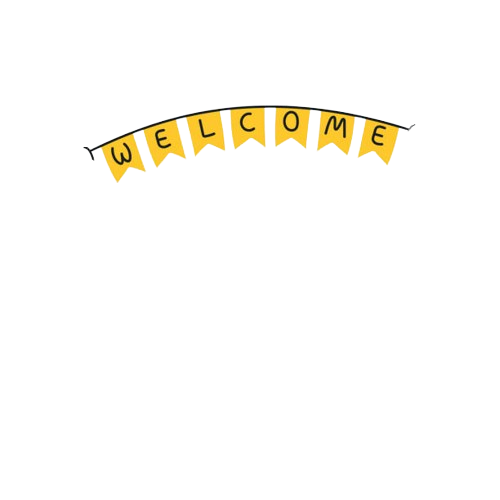
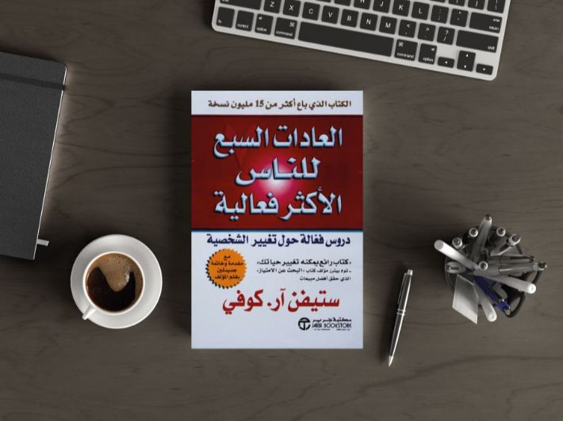
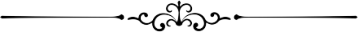
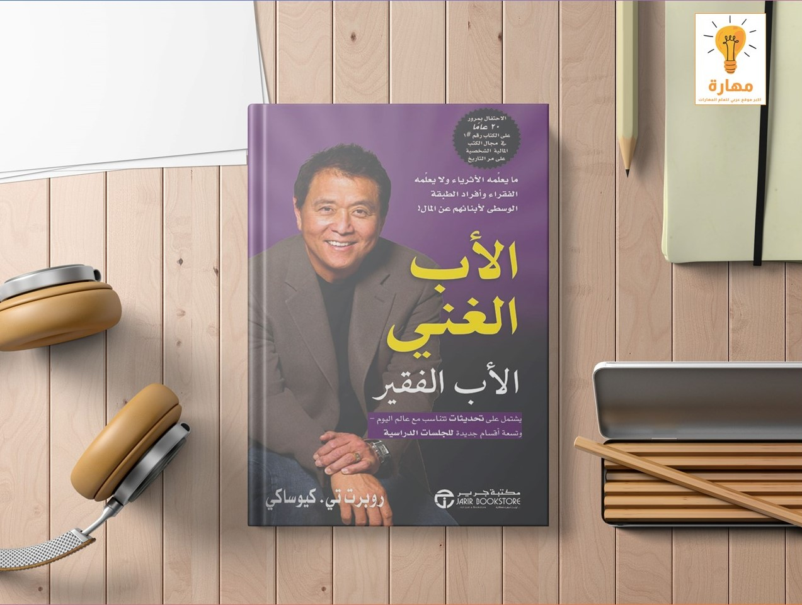
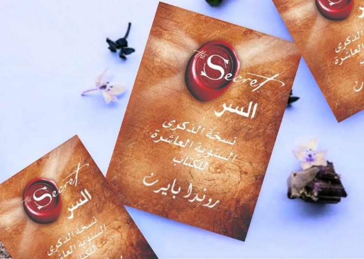
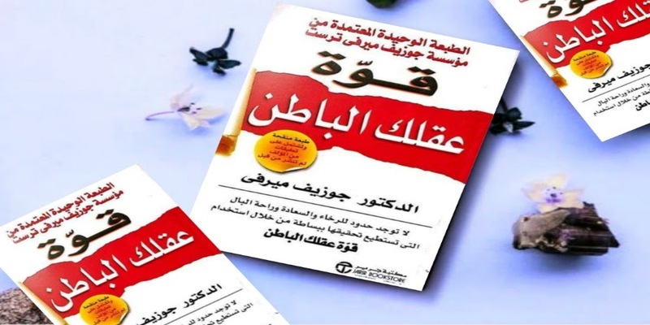
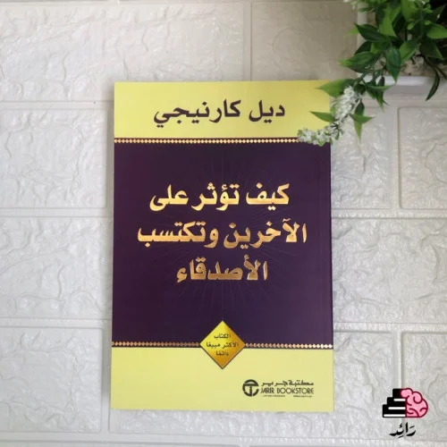
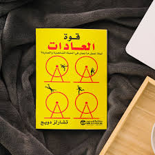
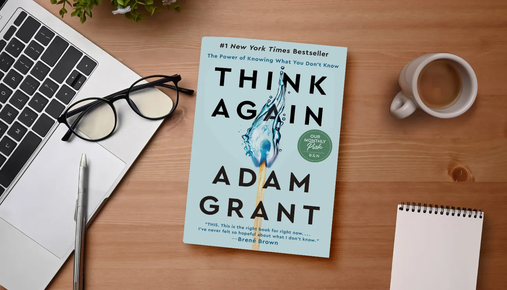

Coffee | Music
Books


العادات السبع للناس الأكثر فعالية
كتاب رائع الفحوى، عميق المضمون، شيّق الأسلوب، يتفاعل مع نفس قارئه فيأبى إلاّ أن يترك فيه أثراً ممتداً، أفكاره مزيج متجانس من علـم النفس وعلم الاجتماع والفلسفة والأدب وعلم الإدارة، ومثل هذا المزيج غالباً ما يُنتج جرعات عالية من "الحكمة" التي نتعطش اليها. المؤلف خبير أمريكي في مجال السلوك الإداري يدعى "ستيفن كوفي" وهو شديد الإيمان بالقيم الإنسانية والمبادئ المُثلى، وقد بيعت من كتابه هذا ملايين النسخ، وتُرجم إلى لغات عدّة (منها العربية)، ولازالت تُعقَد دورات تدريبية في مجاله وحول مضمونه، وقد اعتُبر المؤلّف واحداً من أكثر خمس وعشرين شخصية أثّرت في المجتمع الأمريكي في استفتاء أجرته مجلة شهيرة بعد فترة من تأليفه للكتاب
لمشاهدة شرح الكتاب من قناة دوباميكافين
see videosلا يمكن ايذائي
كتاب You Can’t Hurt Me هي القصة الحقيقية المذهلة لديفيد جوجينز، رجل عصامي حوّل حياته من محنة ومعاناة إلى نجاح وإنجاز. في هذه المذكرات الملهمة، يشرح جوجينز تفاصيل رحلته ليصبح رياضيًا مشهورًا عالميًا، و Navy SEAL، و super marathoner، ومتحدثًا تحفيزيًا. يروي معاناته مع الفقر وسوء المعاملة عندما كان طفلاً، وسنوات المراهقة الصعبة التي وجد فيها نفسه في مشكلة مع القانون ومشردًا في شوارع سان دييغو، وتجنيده في نهاية المطاف في الجيش. يروي جوجينز كيف تغلب على هذه العقبات ليصبح جنديًا بحريًا مزينًا وأحد أقوى رياضيي التحمل في العالم. يشاركنا تجاربه من بعض أكثر الأحداث قسوة على هذا الكوكب مثل Badwater 135، ألتتراماراثون عبر وادي الموت ؛ سباق التحمل لمسافة 100 ميل في الولايات الغربية ؛ ألترا تريل دو مونت بلانك ؛ سباق ليدفيل 100 ميل ؛ ريد بُل 400 ؛ سباق الموت المتقشف. و اكثر. لا يمكنك أن تؤذيني هي قصة ملهمة عن المرونة والتصميم والنجاح من شأنها أن تحفز القراء على دفع أنفسهم إلى أبعد مما كانوا يعتقدون أنه ممكن.
لمشاهدة شرح الكتاب من قناة دوباميكافين
see videos
الأب الغني والأب الفقير
استطاع الكاتب الأمريكي روبرت كيوساكي أن يكتشف معاناة الفقراء وازديادهم في كتابه (الأب الفقير والأب الغني)، والذي يروي فيه قصة طفولته في حوار ذاتي بين الأبوين المتناقضين؛ الأول والده الأستاذ الجامعي ويشار إليه بالفقير، والثاني رجل الأعمال والد صديقه مايك ويشار إليه بالغني، ويقدم مجموعة من الدروس للوصول إلى الثراء، ونصائح للتغلب على معوقات النجاح، وماذا يحتاج الفقير حتى يبدأ في الاستثمار. وحقق الكتاب مبيعات تتجاوز 30 مليون نسخة وترجم إلى أكثر من 40 لغة في العالم منذ نشره في عام 1997، وحاصل على درجة تقييم (4.05) لأكثر من 300 ألف قارئ في موقع goodreadsوأكثر من 11000 مراجعة عربية وأجنبية. يدعو الكتاب الموظفين للتفكير جديًّا في البدء بالاستثمار وعوضًا عن تسلق السلّم الوظيفي العمل على امتلاك السلّم بأكمله. يرجع الكتاب سبب زيادة فقر الفقراء إلى انعدام الثقافة المالية أو ما يسميها «لعبة المال» التي نأخذها من البيوت بدلاً من المدارس والكليات، وإلى الوظيفة التي اعتقد الآباء أنها آمنة بينما هي عبودية ورعب وقلق يعيشها الأبناء اليوم وسط «متاهة الفأر» المتكررة في محاولة لتغطية النفقات المرتفعة بالمدخول؛ فهو يشتري الخصوم مثل البطاقات الائتمانية والقروض ضنًّا منه إنها أصول تدر الدخل!
لمشاهدة شرح الكتاب من قناة دوباميكافين
see videosاقفز
كتاب اقفز للمؤلف ستيف هارفي .. يشاركنا ستيف هارفي معرفته بشأن ما الذي يجعل بعضنا يقبلون على قفزة الثقة بينما ينصرف آخرون عنها بشكل مؤسف؛ فيتحسرون بعد ذلك على الفرص ويلومون الظروف التي أثنتهم عن المجازفة. لقد قام ستيف هارفي بقفزة الثقة أمام أعيننا، والآن هو ملتزم بنشر المبادئ والاستعدادات التي استخدمها هو وآخرون لتجاوز مخاوفهم والانطلاق نحو أحلامهم الفريدة!.
لمشاهدة شرح الكتاب من قناة دوباميكافين
see videosفن اللامبالاة
فن اللامبالاة لعيش حياة تخالف المألوف ( The Subtle Art of Not Giving a F*ck) للكاتب مارك مانسون هو كتاب في التنمية البشرية، يتحدث فيه الكاتب عن ما يسميه صدمة تشعر بها بعد قراءتك للكتاب. الكتاب يتحدث عن أن الانسان لا يجب بالضرورة أن يكون إيجابياً طوال الوقت وأن المفتاح إلى بشر أكثر قوة وسعادة كامن في التعامل مع الشدائد تعاملاً أفضل. يقول مانسون : "فلنكن صادقين، الشيء السيء سيء وعلينا أن نتعايش مع هذا ولا نتهرب من الحقائق ولا نغلّفها بالسكّر، بل نقولها كما هي جرعة من الحقيقة الفجّة الصادقة المنعشة هي ما ينقصنا اليوم". يتناول الكتاب في فصوله كيفية تغلب الإنسان على عقبات حياته بطريقة منطقية بعيداً عن التهرب والخوف منها.
لمشاهدة شرح الكتاب من قناة دوباميكافين
see videosالعادات الذرية
كتاب العادات الذرية تأليف جيمس كلير .. أيًا كانت أهدافك فإن كتاب "العادات الذرية" يقدم لك إطار عمل من أجل تطوير مهاراتك في كل يوم. جيمس كلير واحد من أبرز الخبراء في مجال اكتساب العادات، يوضح لنا في كتابه هذا استراتيجيات عملية تعلمنا كيف نستطيع اكتساب عادات جيدة، وكيف نتخلص من القديمة السلبية، ويشرح لنا طريقة إدارة وإتقان أفعالنا اليومية البسيطة التي نستطيع من خلالها تحقيق نتائج مذهلة. يعلمنا هذا الكتاب: كيف نخلق الوقت من أجل اكتساب عادات جديدة كيف نتخلص من نقص الحافز، ونتمتع بقوة الإرادة كيف نغير بيئتنا المحيطة لتحقيق نتائج إيجابية في الحياة
لمشاهدة شرح الكتاب من قناة دوباميكافين
see videos
السر
يعد كتاب السر من أفضل كتب المساعدة الذاتية مبيعاً لعام 2006 من تأليف روندا بايرن، استناداً إلى فيلم سابق من نفس الاسم. وتقوم فكرته على قانون الجذب ويدعي ان التفكير الإيجابي يمكن ان يخلق نتائج تجعل الحياة افضل مثل زيادة في الثروة والصحة والسعادة. هذا الكتاب قد باع ما يزيد على 21 مليون نسخة وترجم إلى 44 لغة، ولكن مع ذلك قد اجتذب قدرا كبيرا من الجدل، وكذلك تمت السخرية في العديد من البرامج التلفزيونية من كتاب السر: - أفكارك الحالية تشكل حياتك المستقبلية. ما تركز عليه غالباً أو تفكر فيه سوف يظهر في حياتك.. - اصنع وشكل يومك بالتفكير في الطريقة التي تريد بها أن تمضي الأمور، وسوف تشكل حياتك عمداً وقصداً. -التوقع قوة جذب فعالة. توقع الأمور التي تريدها، ولا تتوقع ما لا تريد. - التخيل عملية خلق الصور في عقلك ترى فيها نفسك وأنت تستمع بما تريد. عندما تتخيل، فإنك تولد أفكاراً ومشاعر قوية لامتلاك الشيء في التو واللحظة، وعندئذ يعود قانون الجذب بذلك الواقع إليك، تماماً كما رأيته في عقلك. - لكي تجذب المال، ركز على الثروة

قوة عقلك الباطن
كتاب مميز جدا ومبسط لمن يقرأ لأول مره عن العقل الباطن وبه تمارين رائعه للإسترخاء والبرمجة الإيجابيةعقلك الباطن هو الجزء من عقلك الذي يخزن معتقداتك، تجاربك الماضية، مواهبك، كل المواقف التي واجهتها وكل . يدور حول عقلك الباطن وكيف تكتشف هذا الكنز الرائع الذى بداخلك، وهذه القوة الرهيبة التى تحوذها داخل نفسك، وكيف تسخرها وتستثمرها لصالح نجاحك وتقدمك.
لمشاهدة شرح الكتاب من قناة دوباميكافين
see videos
كيف تؤثر على الآخرين وتكتسب الأصدقاء
كتاب “كيف تكسب الأصدقاء وتؤثر في الناس” للكاتب ديل كارنيجي هو دليلٌ شامل لكل من يرغب بتحسين علاقاته والنجاح في الحياة. يُعلمنا كارنيجي أن التواصل مع الأشخاص الآخرين هو مهارة وليس موهبةً ربانيّة، وأنه من خلال كونك صادقًا مع المشاكل التي تواجهها في هذا الطريق، فسوف تُحسّن مهارة التواصل. بالرغم من أن هذا الكتاب قد يبدو للوهلة الأولى بأنه رتيب بعض الشيء -نٌشر في 1936- إلا أنه لا يزال ينطبق على حياتنا العصريّة اليوم. كي لا تقرأ الكتاب بأكمله ولتحصل على الفائدة المرجوّة، فقد لخّصنا الكتاب بطريقةٍ عمليّة رائعة سلسة، يُمكنك بعد قراءة هذا الملخّص تطبيق المبادئ والمعلومات المذكورة في حياتك الشخصيّة.
لمشاهدة شرح الكتاب من قناة دوباميكافين
see videos
قوة العادات
في كتاب قوة العادات يأخذنا تشارلز دوهيج،و هو مراسل صحفي الحائز على جوائز لصحيفة نيويورك تايمز. إلى الحافة المثيرة للاكتشافات العلمية التي تشرح سبب وجود العادات وكيف يمكن تغييرها. من خلال تقطير كميات هائلة من المعلومات في روايات مثيرة للاهتمام. يسلط دوهيج الضوء على فهم جديد تماما للطبيعة البشرية وإمكاناتها للتحول. عادة ما نرى و نتعلم لماذا يكافح بعض الناس والشركات من أجل التغيير. على الرغم من سنوات من المحاولة، في حين يبدو أن آخرين يعيدون تشكيل أنفسهم بين عشية وضحاها. في كتاب قوة العادات نكتشف علم الأعصاب وراء كيفية عمل العادات وعلى وجه التحديد أجزاء الدماغ التي تتطور وتقيم فيها. نكتشف كيف كانت العادات الصحيحة حاسمة للترويج الناجح لبيبسودنت (شخصية في الكتاب). و لتوني دونجي الذي قاد فريقه إلى فوز سوبر بول من خلال تغيير خطوة واحدة في حلقة عادة لاعبيه؛ ونتعلم كيف تمكنت شركة كبيرة من قلب نفسها من خلال تغيير روتين واحد فقط داخل المنظمة.
لمشاهدة شرح الكتاب من قناة دوباميكافين
see videos
أعد التفكير
كتاب أعد التفكير من الكتب الرائعة في عالم التنمية البشرية، والتفكير الابداعي، وتطوير الذات، حيث يقدم خلاصات الكتاب منهج مميز، لفهم افضل لكيفية التفكير، واتخاذ القرارات. ويشجع مؤلف الكتاب القراء على التأمل في آرائهم، والاعتراف بأنهم يمكن أن يكونوا على خطأ، كما يضع الكتاب استراتيجيات عملية لإعادة التفكير في المفاهيم القديمة، وتحفيز التعلم المستمر، والتطوير الشخصي، لذلك تعتبر خلاصات الكتاب مرشد قيم للأفراد والمهنيين، الذين يسعون إلى تحسين قدرتهم في اتخاذ القرارات الصائبة، والتفكير الناقد.
لمشاهدة شرح الكتاب من قناة دوباميكافين
see videos